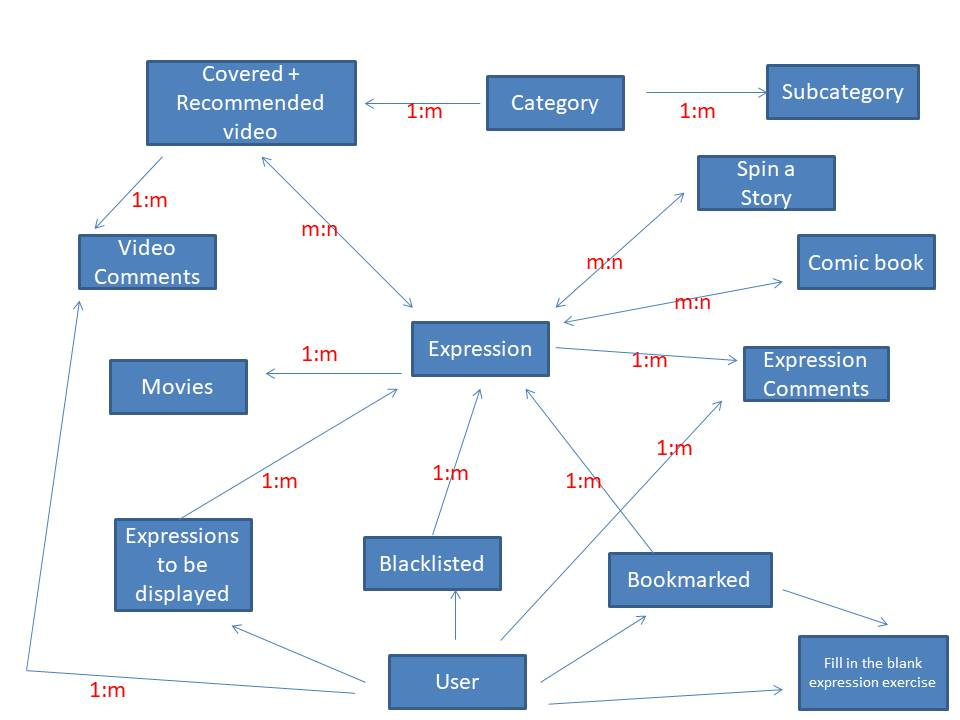

Here are the open questions....
Q. How should the videos be displayed?Ans: I would prefer youtube style page for displaying videos, along with a list of suggested videos. We need the concept of playlist also. For example, if someone want to view all the videos related to job interview, only coffee shop interviews, only bar interviews etc.
Q. For expressions and video pages, is there a better way to display information than a table?
Ans. I feel that we can use carousel.
Q. What are the additional techniques for revision and memorization?
Ans: ???
Q. What is the difference between the category and the keyword search using in expressions/videos?
Ans: The categories are fixed in Nalanda. If a user wants to search all expressions that use 'coffee shop interview' then they should be given results of videos based on search. From the videos they can learn what expressions were used.
Q. Do we need videos in various accents?
Ans. As per the feedback so far we need actors with different accents.
Q. What is the difference between categories and tags?
Ans. Categories are fixed in Nalanda and any video will be part of a category. Tags will be used as meta data for expressions. For example, if an expression is generally not used in writing then we can put tag as 'Not suitable for writing'. If the expression is country specific then we can tag it as 'US, UK etc..'. We need to allow search by tags also. Can this category and tags concept be improved?
Q. How do we tell users about the categories/subcategories from home page?
Ans: ??
Q. How will we allow users to bookmark and blacklist the expressions?
Ans: Registered users will be allowed to blacklist and bookmark the expressions. If the user already uses the expression then they can prevent the expression from displaying again.
If the user likes the expression then they can bookmark the expression. We will help the users to memorize and recall with effective techniques. See the below diagram to understand the concept.
As per the diagram below, expressions 3,5,6 will be removed from the view for the user after they are moved to other buckets.

Q. How the various entities in the website are related?
Ans: The below diagram provides high level Entity Relation Diagram(ERD). We need to discuss what attributes these entity will have. 
Q. How the flow for Student and Professional users can be understood?
Ans: The below diagram provides high level flow diagram:

Q. What are the tasks of admin/support staff?
Ans:
- Add update remove expressions
- Add/update/remove videos
- Remove offensive comment and/or user
- Add/update/remove movie dialogues/clips
- Add/update/remove spin a story and other exercises
- ??
Q. What more features will be added?
Ans:
- Verify email of users that register with Nalanda to prevent the misuse of email someone else.
- Captcha on registration page to prevent automated attack.
- Dashboards for users to view their progress. We can have dashboards for (Student/Basic, Student/Advance, Professional/Basic, Professional/Advance) to show the remaining , blacklisted and bookmarked expressions. What about adding popularity also?